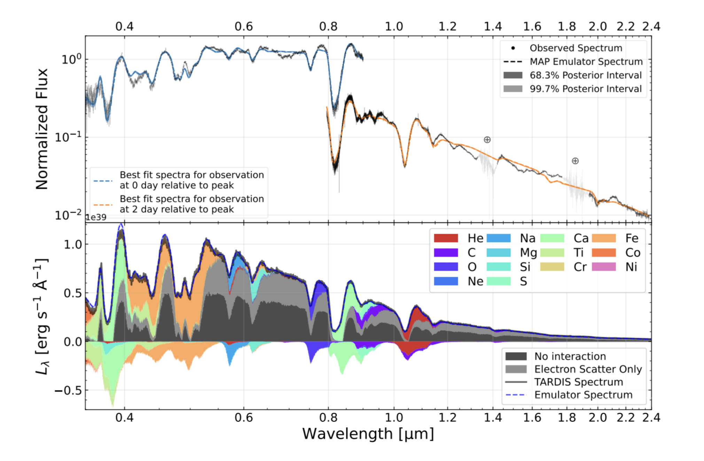

Traces of Helium Detected in Type Ic Supernova 2014L

Type Ic supernovae are classified by the absence of helium features in optical spectra, and they are thought to come from the core collapse explosion of massive stars that have lost their outer hydrogen and helium envelopes. But whether helium is truly absent or spectroscopically hidden remains debated. Despite extensive observations, quantifying helium in these events has remained challenging due to limitations in modeling and fitting techniques. Our postdoctoral research associate Jing Lu and her collaborators recently applied a Bayesian inference framework to a normal Type Ic supernova SN2014L and found that spectra are inconsistent with a helium-free composition, providing observational evidence for hidden helium in a Type Ic supernova.
This study applies the inference workflow that has been previously developed and applied to type Ia supernovae by TARDIS team members (See reference O’Brien et al. 2021, 2024) to a stripped envelope supernova. The authors trained a deep-learning network to emulate synthetic spectra calculation using radiative transfer code TARDIS in the space parameterized for SN2014L, adopting the same network architecture of Probabilistic Dalek (see reference Kerzendorf et al. 2022). This emulator is then used for synthetic spectra evaluation during the inference instead of running TARDIS simulations, accelerating the evaluation time drastically and enabling a more efficient exploration of the physical parameter space.
By applying Bayesian inference to the observed optical and near-infrared spectra at the same time, the team finds evidence that a trace amount of helium is present in the outer ejecta of this classified helium-free object SN2014L. From the inferred results, the team shows that the prominent feature near 1 μm is dominated by helium contribution. This work demonstrates the importance of combining detailed physical modeling with the Bayesian inference technique.